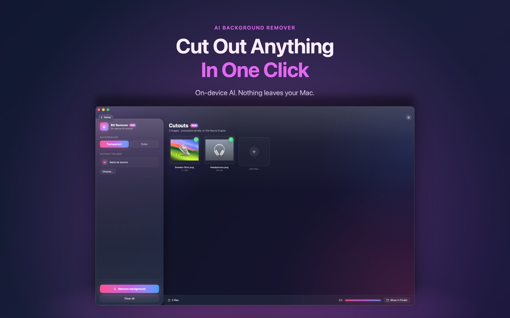

Product shots, portraits, stickers: Knack cuts the subject out with on-device AI. Your photos never leave your Mac.

AI Background Remover is part of Knack Pro, a one-time purchase with no subscription.
No. The AI model runs on your Mac's Neural Engine, so it works offline and nothing is uploaded.
Yes. Drop a folder and Knack processes every image in it.
AI Background Remover is one of more than twenty native tools in Knack — converters, PDF tools, OCR, AI photo tools and more, all running on your Mac.
Get Knack